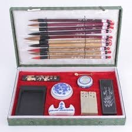

Kaligrafia chińska
 |
 |
 |  |
Charakterystyka chińskiej kaligrafiiWkaligrafii chińskiej można wyróżnić kilka stylów pisania są to: pieczęciowa, oficjalna lub klerykalna, płynna lub pół kursywa, kursywa i normalna. Każdy styl ma swoje własne specyficzne cechy i cele. Istnieje siedem podstawowych pociągnięć zwanych również jako siedem tajemnic. Podstawowe pociągnięcia składają się z kropki, linii poziomej, linii pionowej, pociągnięcie zamaszyste w dół, ostra krzywa i pociągnięcie w dół. Połączone różne style, kształty i formy są nieskończone i zależą od czynników jak stężenie atramentu, elastyczność pędzla, grubości papieru i jego właściwości wchłaniania. Specyficzną cechą kaligrafii są jej pociągnięcia, które są stałe i pozbawione możliwości poprawiania. Każde pociągniecie wymaga starannego planowania i pewnego pociągnięcia pewną ręką. Język chiński uważany jest za trudny, a zarazem fascynujący. Używany jest przez jedną piątą populacji świata. W obecnych czasach z pewnością nie powinien być ignorowany. Język Państwa Środka stanowi wyzwanie dla uczącego się. Chińskie pismo wygląda jak przypadkowe kreski i kropki, natomiast język mówiony wydaje się być zbiorem niemożliwych do wymówienia sylab. Każdy element znaku pisany jest zgodnie z zasadą kolejności pociągnięć pędzla. Znaki powinny być nanoszone zawsze w tej samej kolejności. Wpłynie to na rozwinięcie pamięci mięśniowej w palcach, a w konsekwencji na proces zapamiętywania znaków. Zasady pomocne w nauce pisania chińskich znaków:
|
|||